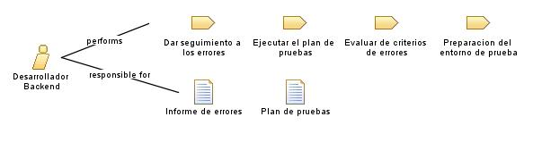

| Role: Desarrollador Backend |
 |
|
Relationships
 |
||
| Primary Performs | ||
|---|---|---|
| Modifies |
|
|
Main Description
| Un desarrollador back-end se enfoca en la implementación y la gestión de la lógica del servidor y la base de datos de una aplicación, se ocupa de la parte invisible de la aplicación, trabajando con tecnologías como lenguajes de programación como [Python, Java, Ruby o PHP], frameworks como [Django o Ruby] Rails, y bases de datos como MySQL o MongoDB. |
Staffing
| Skills |
|
|---|